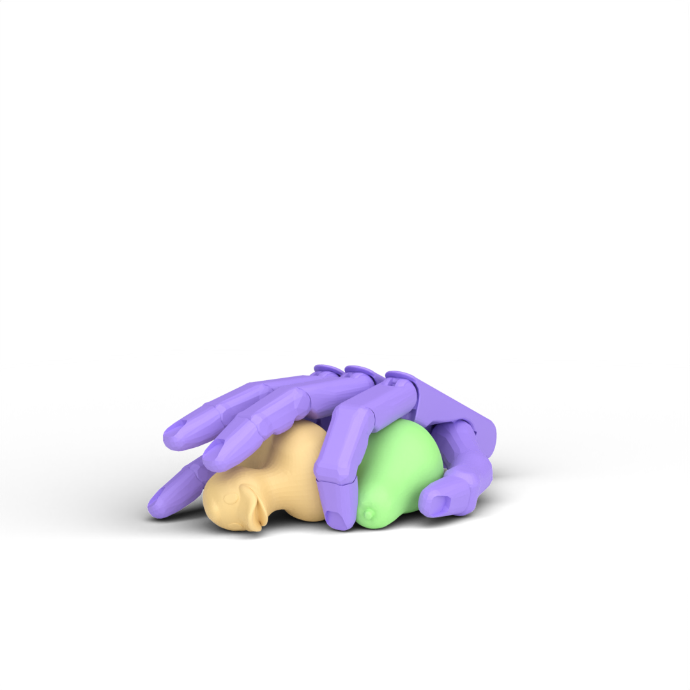

We generate a pre-grasp pose with either the augmented Differentiable Force Closure (DFC) (A) or a diffusion model (B), then execute the grasp with a planned reaching trajectory (C) and learned lifting policy (D). We further distill the policy to a vision-based student for real-world scenarios (E).
MultiGrasp released a large-scale dataset of multi-object grasping with a Shadow Hand that includes approximately 90k grasps for 8 different objects (73.7k double-object grasps, and 16.4k single-object grasps).
| bulb+bulb | bulb+camera | bulb+cube | knob+knob | knob+duck | knob+pear |
|  | |||||
| camera+bulb | camera+camera | camera+cube | duck+knob | duck+duck | duck+pear |
 |
|||||
| cube+bulb | cube+camera | cube+cube | pear+knob | pear+duck | pear+pear |
MultiGrasp executed with an optimization-based motion plan to guide the hand to the pre-grasp pose, followed by an RL policy for lifting the objects.
| bulb+camera | camera+knob | cube+cylinder |
| duck+knob | cylinder+duck | bulb+bulb |
MultiGrasp can generalize to grasping more objects. We showcase the execution trajectories of multiple cylinders, with their amount ranging from 3 to 5.
| 3 Objects | 4 Objects | 5 Objects |
MultiGrasp generates grasp trajectories that are plausible to execute on a real Shadow Hand robot.